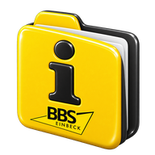
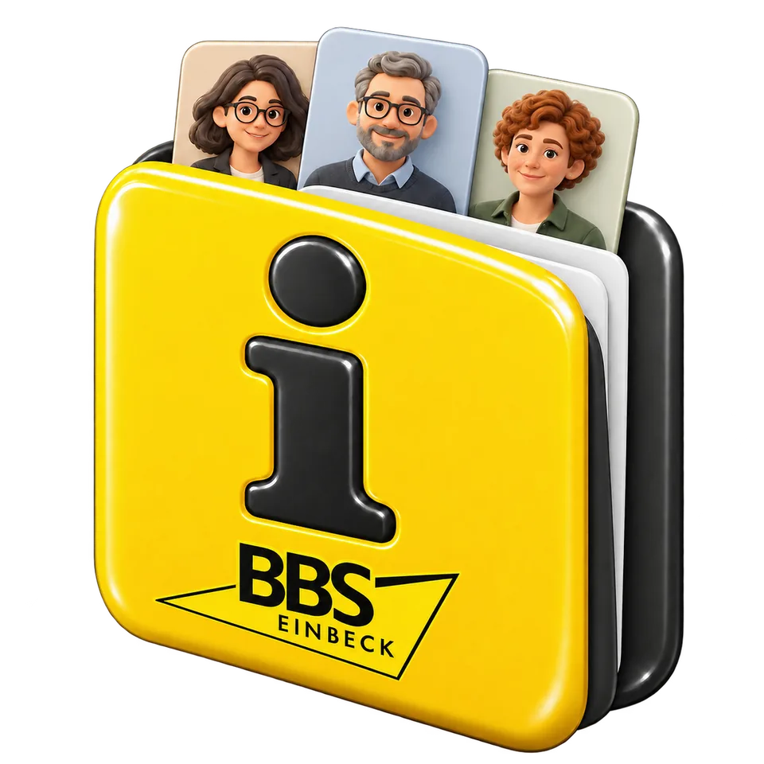

Geschützt / Protected
IServ-Anmeldung, Kollegiumsprüfung und getrennte Rechte für Lesende, Redaktion und Administration.

BBS InfoBBS EINBECKBBS Info verbindet laufende Meldungen, nummerierte Ausgaben, Beiträge aus dem Kollegium, eine gemeinsame Fotolibrary und das historische Archiv in einer geschützten Anwendung.
News for the school staff. BBS Info brings updates, numbered editions, staff contributions, a shared photo library and the historical archive together in one protected application.
Idee und Konzeption: Marc Schulz · MIT-Lizenz · Alle Demo-Inhalte sind fiktiv.

Ein kurzer Beitrag kann sofort erscheinen. Später kann die Redaktion ihn mit weiteren Meldungen, Berichten, Steckbriefen und freigegebenen Fotos in eine nummerierte Ausgabe übernehmen. Die Lesenden finden Inhalte über die Suche und können Ausgaben als PDF speichern.
Publish a short update immediately. Editors can later combine it with further news, reports, staff profiles and approved photos into a numbered edition. Readers find information through search and can download each edition as a PDF.
IServ-Anmeldung, Kollegiumsprüfung und getrennte Rechte für Lesende, Redaktion und Administration.
Rich-Text-Editor, Bilder, Vorlagen und redaktionelle Entwürfe.
Nummerierte Webausgaben mit Beiträgen, Steckbriefen und PDF-Download.
Eigene Berichte und Steckbriefe privat einreichen und redaktionell übernehmen.
Neue Inhalte, freigegebene Fotoalben und historische, teils per OCR erfasste PDFs durchsuchen.
Persönliche Benachrichtigungen für Aktuelles und freigegebene Fotoalben mit gemeinsamem Rhythmus. Die Ausgaben-Mail bleibt getrennt. Der sichtbare Absendername lautet „BBS Info“.
Private Bildereinreichungen mit fortsetzbarem Ordner-Upload und Inhaltsabgleich, gemeinsame Alben mit Jahresnavigation, Seitenauswahl und wählbarem Titelbild, namentliche Kommentare und ZIP-Download der Originale mit Herkunftsliste.
Album-Besuche, Original- und ZIP-Downloads sowie Übernahmen, Kommentare und Löschungen bleiben nachvollziehbar.
Neu in Version 1.3.3: Die Fotoansicht hat einen schmalen hellen Rand. Freigegebene Vorschaubilder werden beim Wiederbesuch bis zu 24 Stunden aus dem privaten Browsercache geladen; Bilddateinamen mit Umlauten bleiben beim Upload korrekt.
New in version 1.3.3: Photo details have a slim, light border. Approved previews use a private 24-hour browser cache on return visits, and uploaded filenames preserve Unicode characters.
Neu in Version 1.3.2: Bei der redaktionellen Foto-Sichtung zeigt die Albumwahl nur die passenden Eingaben. Die Fotolibrary und der Link zur Sichtung sind auf der Startseite mit dezentem Blau gekennzeichnet. In der Fotoansicht stehen Kommentare vor den kompakten, nur redaktionellen Korrekturwerkzeugen.
New in version 1.3.2: Editorial photo review shows only the fields needed for the selected album. Subtle blue accents identify the photo library and review links on the home page. Photo details show comments before compact editor-only correction controls.
Neu in Version 1.3.1: Unterbrochene Foto-Uploads lassen sich in der offenen Einreichung durch erneute Ordnerwahl fortsetzen. Bereits vorhandene Bilder werden anhand ihres Inhalts übersprungen.
New in version 1.3.1: Resume an interrupted photo upload by selecting the folder again in the open submission. Existing images are detected by content and skipped.
Neu in Version 1.3: Benachrichtigungen werden unter „Meine Inhalte“ verwaltet. Aktuelles und freigegebene neue oder ergänzte Fotoalben sind getrennt wählbar; beide Themen teilen einen Versandrhythmus. Albumvorschauen werden nach erneuter Anmeldung aus dem Browsercache validiert.
New in version 1.3: Personal notifications move to a dedicated tab. Staff can choose updates and approved new or expanded photo albums with one delivery schedule. Album previews can be validated from the browser cache after access checks.
Neu in Version 1.2.2: Freigegebene Fotoalben erscheinen in der globalen Suche. Die Fotolibrary bietet eine Jahresauswahl und Seiten für größere Album-Bestände. Hochgeladene Originale bleiben bei einer späteren IServ-Kontolöschung erhalten.
New in version 1.2.2: Approved photo albums appear in global search. The photo library offers year navigation and pages for larger collections. Uploaded originals remain stored if an IServ account is later removed.
Neu in Version 1.2.1: Fotoeinreichungen stehen als dritter Tab bei „Meine Inhalte“ und zeigen beim Upload einen Fortschrittsbalken. Die Redaktion sichtet jedes Bild nur einmal und kann ein Albumtitelbild bestimmen. In der Galerie steht der Name der einreichenden Person in der Bildansicht.
New in version 1.2.1: Photo submissions have their own tab under personal content and show upload progress. Editors review each photo once and choose an album cover. The uploader's name appears in the photo detail view.
Neu in Version 1.2: Das Kollegium kann Fotoordner einreichen. Die Redaktion übernimmt ausgewählte Bilder in gemeinsame Alben; freigegebene Bilder lassen sich in Ausgaben verwenden. Aufrufe von Alben und Downloads werden auditiert.
New in version 1.2: Staff can submit photo folders. Editors select images for shared albums, and approved photos can be used in editions. Album visits and downloads are audited.
Neu in Version 1.1: Ein 30-Tage-Papierkorb für Updates, Ausgaben, private Beiträge und Steckbriefe. Die Redaktion kann offene Kollegiumsbeiträge und unverknüpfte übernommene Steckbriefe direkt dorthin verschieben und wiederherstellen.
New in version 1.1: a 30-day trash for updates, editions, private contributions and profile sheets. Editors can move pending staff contributions and unlinked adopted profiles there directly and restore them.
Alle Ansichten wurden lokal aus den HTML-Templates mit erfundenen Namen und Inhalten erzeugt. Es gibt hier keine Anmeldung und keine Verbindung zur produktiven Anwendung.
Every view was rendered locally from the app's HTML templates with fictional names and content. This site does not connect to the protected live application.
Die öffentliche Ausgabe enthält den Anwendungscode, Tests, Beispieldateien und Installationshinweise. Eigene IServ- und Mailzugänge müssen privat eingerichtet werden.
The public repository includes application code, tests, examples and installation guides. Provide your own private IServ and mail configuration.